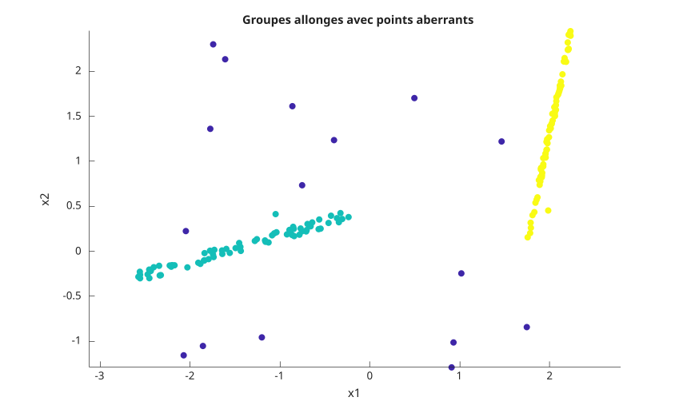
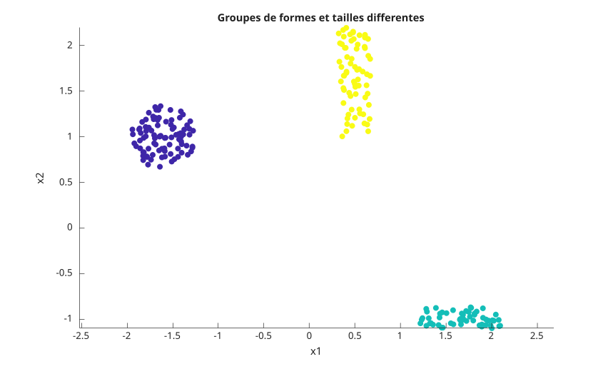
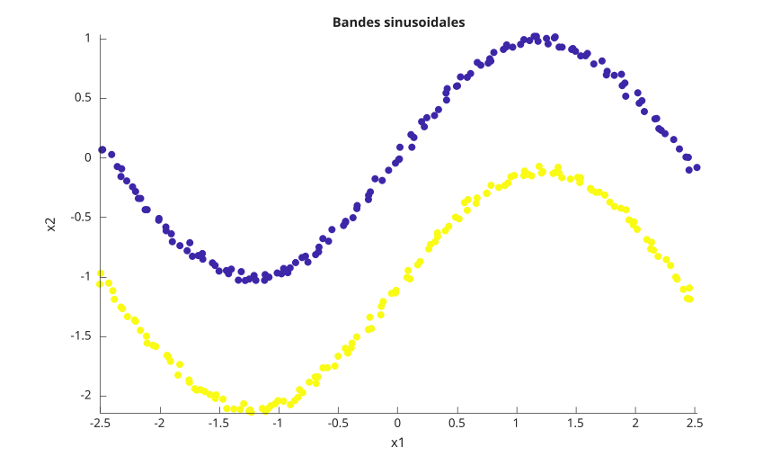
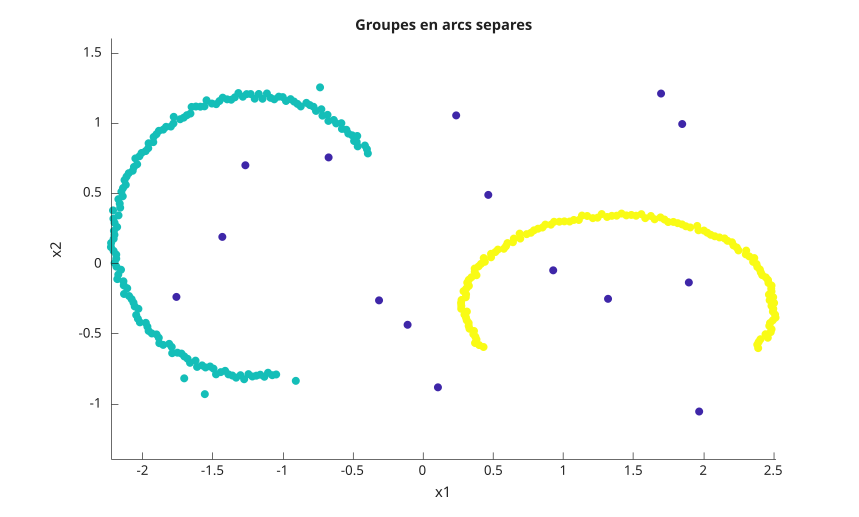
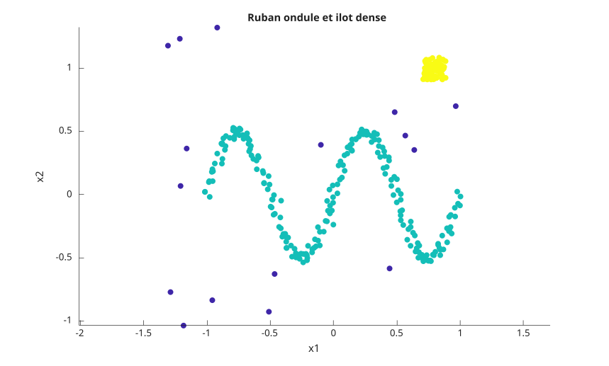
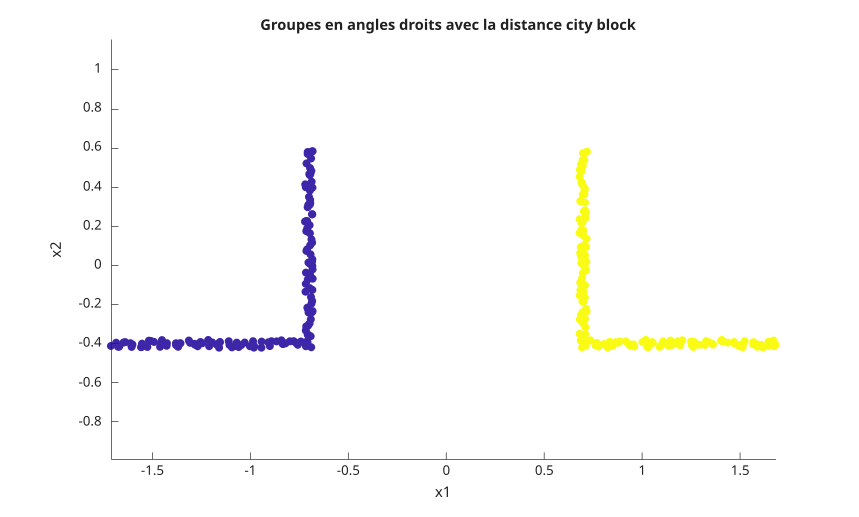

idx = dbscan(X, epsilon, minpts)
idx = dbscan(X, epsilon, minpts, 'Distance', distance)
idx = dbscan(X, epsilon, minpts, 'Distance', 'minkowski', 'P', p)
idx = dbscan(X, epsilon, minpts, 'Distance', 'seuclidean', 'Scale', scale)
idx = dbscan(X, epsilon, minpts, 'Distance', 'mahalanobis', 'Cov', cov)
idx = dbscan(D, epsilon, minpts, 'Distance', 'precomputed')
idx = dbscan(B, [], minpts, 'Distance', 'precomputed')
[idx, corepts] = dbscan(...)
| Paramètre | Description |
|---|---|
| X | matrice numerique reelle pleine. Chaque ligne est une observation et chaque colonne est une variable. Une entree vide avec zero ligne est acceptee et renvoie des sorties vides. |
| D | donnees de distances pre-calculees, reelles et pleines. D peut etre une matrice carree n-par-n ou un vecteur contenant les distances du triangle inferieur dans l'ordre des colonnes : d(2,1), d(3,1), ..., d(n,1), d(3,2), ..., d(n,n-1). |
| B | donnees logiques de voisinage pre-calculees. Les valeurs true indiquent les observations voisines. B peut etre une matrice carree ou le meme format vectoriel compact que D. La diagonale est toujours consideree comme true, car chaque observation est voisine d'elle-meme. |
| epsilon | scalaire positif, rayon du voisinage. Une distance exactement egale a epsilon appartient au voisinage. Utiliser [] seulement lorsque l'entree pre-calculee est logique. |
| minpts | entier positif, nombre minimal d'observations dans un epsilon-voisinage pour obtenir un point coeur. L'observation elle-meme est incluse dans ce compte. |
| distance | nom de distance ou handle de fonction. Les noms peuvent etre abreges lorsque l'abreviation n'est pas ambigue. |
| p | scalaire positif utilise seulement avec 'minkowski'. L'exposant par defaut vaut 2. |
| scale | vecteur positif fini utilise seulement avec 'seuclidean'. Sa longueur doit correspondre au nombre de colonnes de X. Si ce parametre est omis, l'echelle est calculee depuis X. |
| cov | matrice symetrique definie positive utilisee seulement avec 'mahalanobis'. Sa taille doit correspondre au nombre de colonnes de X. Si ce parametre est omis, la matrice de covariance est calculee depuis X. |
| Paramètre | Description |
|---|---|
| idx | vecteur colonne double contenant les etiquettes de groupes. Les etiquettes commencent a 1 dans l'ordre de decouverte. Les observations de bruit valent -1. |
| corepts | vecteur colonne logique. La valeur true indique que l'observation correspondante contient au moins minpts observations dans son epsilon-voisinage. |
dbscan regroupe les observations par connectivite de densite. L'algorithme recherche d'abord les observations situees a une distance inferieure ou egale a epsilon d'une observation candidate. Une candidate devient un point coeur lorsque ce voisinage contient au moins minpts observations. Les groupes sont ensuite etendus depuis les points coeur et incluent les points coeur et les points de bord atteignables par densite.
La comparaison des distances est inclusive : distance <= epsilon. Ce detail est important pour les points situes exactement sur la limite du rayon. Les points qui ne sont atteignables depuis aucun point coeur sont renvoyes comme bruit avec l'etiquette -1.
Les distances integrees prises en charge sont 'euclidean', 'squaredeuclidean', 'seuclidean', 'cityblock', 'chebychev', 'minkowski', 'mahalanobis', 'cosine', 'correlation', 'spearman', 'hamming', 'jaccard' et 'precomputed'. Les distances integrees sont en general plus rapides qu'un handle de fonction.
Un handle de fonction de distance doit accepter deux entrees : une observation ligne et la matrice complete des donnees. Il doit renvoyer une distance numerique reelle pour chaque ligne de X. Le resultat peut etre un vecteur ligne ou colonne.
Pour 'squaredeuclidean', epsilon est compare a la distance euclidienne au carre. Pour une entree numerique 'precomputed', epsilon est requis et compare aux valeurs stockees dans D. Pour une entree logique 'precomputed', epsilon doit etre [], car B encode deja la relation de voisinage.
L'ordre des etiquettes suit l'ordre de decouverte des groupes a partir des lignes d'entree. Les observations de bord atteignables depuis plusieurs groupes sont affectees au premier groupe decouvert qui les atteint.
X = [0 0; 0 0.1; 5 5; 5 5.1; 10 10];
[idx, corepts] = dbscan(X, 0.2, 2)X = [0 0; 0 0.1; 5 5; 5 5.1];
idx = dbscan(X, 0.2, 2)X = [0; 0.1];
[idx, corepts] = dbscan(X, 1, 3)X = [0; 1; 2];
idx = dbscan(X, 1, 2)X = [1 1; 1 1; 1 1; 5 5];
[idx, corepts] = dbscan(X, 1e-12, 3)X = [0 0; 0.1 0.05; 5 5; 5.05 5.05];
idx = dbscan(X, 1, 2, 'Distance', 'squaredeuclidean')X = [0 0; 0.1 0.05; 5 5; 5.05 5.05];
idx = dbscan(X, 0.2, 2, 'Distance', 'cityblock')X = [0 0; 0.1 0.05; 5 5; 5.05 5.05];
idx = dbscan(X, 0.1, 2, 'Distance', 'chebychev')X = [0 0; 0.1 0.05; 5 5; 5.05 5.05];
idx = dbscan(X, 0.2, 2, 'Distance', 'minkowski', 'P', 1)X = [0 0; 0.1 0.05; 5 5; 5.05 5.05];
idx = dbscan(X, 0.2, 2, 'Distance', 'seuclidean', 'Scale', [1 1])X = [0 0; 0.1 0.05; 5 5; 5.05 5.05];
idx = dbscan(X, 0.2, 2, 'Distance', 'mahalanobis', 'Cov', eye(2))X = [1 0; 2 0; 0 1; 0 2];
idx = dbscan(X, 0.01, 2, 'Distance', 'cosine')X = [1 2; 2 3; 10 9; 11 10];
idx = dbscan(X, 0.01, 2, 'Distance', 'correlation')X = [1 2; 2 3; 10 9; 11 10];
idx = dbscan(X, 0.01, 2, 'Distance', 'spearman')X = [1 0 0; 1 0 0; 0 1 0; 0 1 0];
idx = dbscan(X, 0.01, 2, 'Distance', 'hamming')X = [1 0 0; 1 0 0; 0 1 0; 0 1 0];
idx = dbscan(X, 0.01, 2, 'Distance', 'jaccard')X = [0 0; 0 0.1; 5 5; 5 5.1; 10 10];
f = @(row, A) sqrt((A(:, 1) - row(1)).^2 + (A(:, 2) - row(2)).^2);
idx = dbscan(X, 0.2, 2, 'Distance', f)X = [0; 0.1; 5; 5.1; 10];
D = abs(X - X');
idx = dbscan(D, 0.2, 2, 'Distance', 'precomputed')Dv = [0.1 5 5.1 10 4.9 5 9.9 0.1 5 4.9];
idx = dbscan(Dv, 0.2, 2, 'Distance', 'precomputed')B = [true true false; true true true; false true true];
idx = dbscan(B, [], 2, 'Distance', 'precomputed')Bv = [true false false true false true];
idx = dbscan(Bv, [], 2, 'Distance', 'precomputed')f = figure();
rng(11);
n = 70;
u = 2 * rand(n, 1) - 1;
v = 2 * rand(n, 1) - 1;
X1 = [1.2 * u - 1.4, 0.35 * u + 0.12 * rand(n, 1)];
X2 = [0.25 * v + 2.0, 1.2 * v + 0.18 * rand(n, 1) + 1.2];
X3 = [4.8 * rand(18, 1) - 2.2, 3.8 * rand(18, 1) - 1.3];
X = [X1; X2; X3];
idx = dbscan(X, 0.32, 6);
c = idx;
c(c < 0) = 0;
scatter(X(:, 1), X(:, 2), 36, c, 'filled');
axis equal;
title('Groupes allonges avec points aberrants');
xlabel('x1');
ylabel('x2');
f = figure();
rng(12);
n1 = 90;
n2 = 55;
n3 = 70;
theta = 2 * pi * rand(n1, 1);
r = 0.35 * sqrt(rand(n1, 1));
X1 = [r .* cos(theta) - 1.6, r .* sin(theta) + 1.0];
X2 = [0.9 * rand(n2, 1) + 1.2, 0.25 * rand(n2, 1) - 1.1];
X3 = [0.35 * (rand(n3, 1) - 0.5) + 0.5, 1.2 * (rand(n3, 1) - 0.5) + 1.6];
X = [X1; X2; X3];
idx = dbscan(X, 0.28, 5);
c = idx;
c(c < 0) = 0;
scatter(X(:, 1), X(:, 2), 36, c, 'filled');
axis equal;
title('Groupes de formes et tailles differentes');
xlabel('x1');
ylabel('x2');
f = figure();
rng(13);
n = 140;
t = linspace(-2.5, 2.5, n)';
X1 = [t, sin(1.3 * t)] + 0.08 * (rand(n, 2) - 0.5);
X2 = [t, sin(1.3 * t) - 1.1] + 0.08 * (rand(n, 2) - 0.5);
X = [X1; X2];
idx = dbscan(X, 0.18, 5);
c = idx;
c(c < 0) = 0;
scatter(X(:, 1), X(:, 2), 36, c, 'filled');
axis equal;
title('Bandes sinusoidales');
xlabel('x1');
ylabel('x2');
f = figure();
rng(14);
t1 = linspace(0.2 * pi, 1.55 * pi, 150)';
t2 = linspace(1.85 * pi, 3.15 * pi, 130)';
r1 = 1 + 0.05 * (rand(150, 1) - 0.5);
r2 = 1 + 0.05 * (rand(130, 1) - 0.5);
X1 = [r1 .* cos(t1), r1 .* sin(t1)] + [-1.2, 0.2];
X2 = [1.1 * r2 .* cos(t2), 0.65 * r2 .* sin(t2)] + [1.4, -0.3];
X3 = [4 * rand(20, 1) - 2, 2.6 * rand(20, 1) - 1.3];
X = [X1; X2; X3];
idx = dbscan(X, 0.18, 5);
c = idx;
c(c < 0) = 0;
scatter(X(:, 1), X(:, 2), 36, c, 'filled');
axis equal;
title('Groupes en arcs separes');
xlabel('x1');
ylabel('x2');
f = figure();
rng(15);
n = 220;
t = linspace(0, 4 * pi, n)';
X1 = [t / (2 * pi) - 1, 0.5 * sin(t)] + 0.07 * (rand(n, 2) - 0.5);
X2 = 0.18 * (rand(80, 2) - 0.5) + [0.8, 1.0];
X3 = [2.8 * rand(20, 1) - 1.4, 2.6 * rand(20, 1) - 1.1];
X = [X1; X2; X3];
idx = dbscan(X, 0.14, 5);
c = idx;
c(c < 0) = 0;
scatter(X(:, 1), X(:, 2), 36, c, 'filled');
axis equal;
title('Ruban ondule et ilot dense');
xlabel('x1');
ylabel('x2');
f = figure();
rng(16);
n = 70;
t = linspace(0, 1, n)';
X1 = [[t, zeros(n, 1)]; [ones(n, 1), t]] + 0.04 * (rand(2 * n, 2) - 0.5) - [1.7, 0.4];
X2 = [[-t, zeros(n, 1)]; [-ones(n, 1), t]] + 0.04 * (rand(2 * n, 2) - 0.5) + [1.7, -0.4];
X = [X1; X2];
idx = dbscan(X, 0.16, 4, 'Distance', 'cityblock');
c = idx;
c(c < 0) = 0;
scatter(X(:, 1), X(:, 2), 36, c, 'filled');
axis equal;
title('Groupes en angles droits avec la distance city block');
xlabel('x1');
ylabel('x2');
N = 90;
theta = linspace(0, 2 * pi, N)';
X = [[0.5 * cos(theta), 0.5 * sin(theta)]; [5 * cos(theta), 5 * sin(theta)]];
idx = dbscan(X, 1, 5)idx = dbscan(zeros(0, 2), 1, 2)| Version | Description |
|---|---|
| 2.0.0 | version initiale |